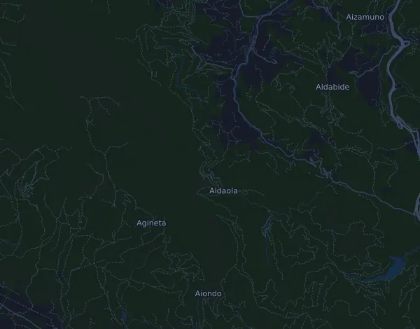

Zegama-Aizkorri Mendi Maratoia 42,5 km
- Matka
- 42,5 km
- Nousumetrit
- ↑ 2 765 m
- Korkein kohta
- 1 507 m mpy
- Alusta
- Maasto ja polku
- Luonne
- Vuoristoinen
Korkeusprofiili
Valmistaudu Milan kanssa
Mila on juoksuvalmentaja sovelluksessa. Kun lisäät kisan suunnitelmaasi, valmentaja suunnittelee viikot starttiin asti kuntosi mukaan ja antaa sinulle loppuaikaennusteen sekä suunnitelman vauhdista, juomisesta ja energiasta reitillä.

Oikea harjoitus. Oikea päivä.
Reitti

Tietoa reitistä
Zegama-Aizkorri Mendi Maratoia on 42,5 km:n polkujuoksu (Zegama, Espanja). Reitillä on nousua 2 765 m ja laskua 2 766 m, 65 m/km, joten reitti on vuoristoinen. Korkein kohta on 1 507 m ja matalin 296 m merenpinnan yläpuolella.
Suurin nousu alkaa kohdassa km 19,9: 518 nousumetriä 2,6 km:n matkalla, keskimäärin 19,6 %, ja huippu on 1 483 m mpy. Reitillä on yhteensä 15 vähintään 25 nousumetrin nousua; viimeinen alkaa kohdassa km 37,3.
Mila-sovelluksessa valmentaja kuvailee reitin tarkasti omalla kielelläsi ja suunnittelee vauhtisi ja energiasi sille.
Nousut
| Alkaa kohdassa | Pituus | Nousumetrit | Jyrkkyys | Huippu (m mpy) |
|---|---|---|---|---|
| km 0,0 | 3,4 km | 431 m | 12,5 % | 734 |
| km 3,7 | 1 000 m | 62 m | 6,2 % | 793 |
| km 5,9 | 300 m | 29 m | 9,8 % | 757 |
| km 6,9 | 1,7 km | 155 m | 9,0 % | 830 |
| km 8,7 | 640 m | 30 m | 4,8 % | 853 |
| km 10,3 | 2 km | 222 m | 11,0 % | 961 |
| km 12,5 | 1,1 km | 120 m | 10,8 % | 1 071 |
| km 13,7 | 690 m | 125 m | 18,0 % | 1 185 |
| km 14,9 | 1,6 km | 273 m | 16,9 % | 1 422 |
| km 19,9 | 2,6 km | 518 m | 19,6 % | 1 483 |
| km 22,8 | 730 m | 52 m | 7,1 % | 1 507 |
| km 26,3 | 1,7 km | 30 m | 1,7 % | 1 135 |
| km 28,8 | 1,6 km | 232 m | 14,5 % | 1 352 |
| km 32,4 | 640 m | 61 m | 9,5 % | 1 021 |
| km 37,3 | 210 m | 27 m | 12,9 % | 740 |
Vauhtitaulukko
Zegama-Aizkorri Mendi Maratoia 42,5 km ajassa 3:00:00 – vauhti kilometrillä ja väliajat
4:14 min/km · km 10: 42:24 · km 21,1: 1:29:28 · km 30: 2:07:13 · km 40: 2:49:37 · maali: 3:00:00
Zegama-Aizkorri Mendi Maratoia 42,5 km ajassa 3:30:00 – vauhti kilometrillä ja väliajat
4:57 min/km · km 10: 49:28 · km 21,1: 1:44:23 · km 30: 2:28:25 · km 40: 3:17:53 · maali: 3:30:00
Zegama-Aizkorri Mendi Maratoia 42,5 km ajassa 4:00:00 – vauhti kilometrillä ja väliajat
5:39 min/km · km 10: 56:32 · km 21,1: 1:59:18 · km 30: 2:49:37 · km 40: 3:46:09 · maali: 4:00:00
Zegama-Aizkorri Mendi Maratoia 42,5 km ajassa 4:30:00 – vauhti kilometrillä ja väliajat
6:22 min/km · km 10: 1:03:36 · km 21,1: 2:14:12 · km 30: 3:10:49 · km 40: 4:14:25 · maali: 4:30:00
Ajat olettavat tasaisen vauhdin koko matkan. Tämä on pelkkää laskentaa, ei ennuste: mäissä, ruuhkassa ja juomapisteillä vauhti vaihtelee.
Usein kysyttyä
Zegama-Aizkorri Mendi Maratoia 42,5 km: milloin kisa juostaan?
Seuraavan kisan päivä ei ole vielä selvillä. Viimeksi kisa juostiin 17. toukokuuta 2026.
Zegama-Aizkorri Mendi Maratoia 42,5 km: kuinka pitkä matka on ja paljonko nousua on?
Matka on 42,5 km, nousua 2 765 m ja laskua 2 766 m. Korkein kohta on 1 507 m mpy.
Zegama-Aizkorri Mendi Maratoia 42,5 km: millainen reitti on?
Reitti on vuoristoinen, nousua keskimäärin 65 m kilometrillä. Reitillä on 15 vähintään 25 nousumetrin nousua; suurin alkaa kohdassa km 19,9: 518 m 2,6 km:n matkalla. Lähtö ja maali ovat samassa paikassa. Alusta on maastoa ja polkua.
Zegama-Aizkorri Mendi Maratoia 42,5 km: miten jaan vauhtini?
Pyri tasaiseen rasitukseen mieluummin kuin tasaiseen vauhtiin: anna vauhdin hidastua ylämäissä, ota se takaisin, kun maasto tasaantuu, ja jarruttele ensimmäisillä kilometreillä. Suurimmat nousut alkavat kohdissa km 0,0, km 14,9, km 19,9 ja km 28,8. Milasta saat juuri tälle reitille vauhtisuunnitelman oman kuntosi mukaan.
Lisää samanlaisia kisoja
Lisää kisoja lähellä
- Behobia – San Sebastián 20,2 km8. marraskuuta 2026 · Behobia, Espanja
- Val d'Aran by UTMB – Torn dera Val d'Aran (VDA) 163 km9. heinäkuuta 2027 · Vielha, Espanja
- Hyundai Mitja Marató Barcelona by Brooks 21 km14. helmikuuta 2027 · Barcelona, Espanja
- Maratón Valencia Trinidad Alfonso Zurich 42,2 km6. joulukuuta 2026 · Valencia, Espanja
- Nationale-Nederlanden San Silvestre Vallecana (carrera popular 10 km)31. joulukuuta 2026 · Madrid, Espanja
- Tenerife Bluetrail 110k9. huhtikuuta 2027 · Playa de Los Cristianos, Espanja
Valmistaudu Milan kanssa
Oikea harjoitus. Oikea päivä.
Tiedot ovat reittitiedostosta ja järjestäjän tiedoista. Tarkista päivä, lähtöajat ja säännöt järjestäjältä.
Mila ei ole yhteydessä järjestäjään eikä kisan sponsoreihin, eivätkä ne sponsoroi tai suosittele Milaa. Nimet ja tavaramerkit kuuluvat omistajilleen. Järjestäjä tai oikeuksien haltija? Pyydä muutosta tai poistoa